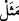

“
(durum)” kelimesi sadece kendisinde tuhaflık bulunan haller ve sıfatlar için
kullanılır. Şeyhzâde der ki: “Mesel lâfzı, herkesin ağzında dolaşan, darb-ı mesel olarak
kullanıldığı husus, söylenildiği hususa benzetilen sözler için örfte kullanılan gerçek
anlamında bir ifadedir. Daha sonra tuhaflık konusunda zikredilen söze benzetilerek tuhaf
sıfatlar ve garip durumlar için kullanılır olmuştur. Çünkü bu kelime ancak kendisinde
tuhaflık olan hususlar için kullanılır.”
“kör ve sağır ile gören ve işiten gibidir.” yâni bunlar gibidir. Buna göre onların
bizzat kendileri, bizzat onlar gibi olmaktadır. Çünkü bir şeyin hâlini başka bir şeyin
hâline benzetmek, birinci şeyin bizzat kendisinin de ikinci şeye bizzat benzetilmiş
olmasını gerektirir. “Kör ve sağır” kâfirlerdir, “gören ve işiten” ise mü’minlerdir.
Kâfirlerin ölüler gibi hem kör hem de sağır olanlara benzetilmesi mübalağayı daha da
artırmaktadır. Bu benzetmenin sebebi ise şudur: Kâfirler Allah’ın yarattığı varlıklara
ibret nazarı ile bakmadıkları; kendilerine okunan âyetleri düşünmek için dinlemedikleri
için gözleri kör, kulakları sağır gibi olmuştur. Bu mânâda görüp işitemedikleri için
onların durumu, kişiyi hatadan koruyan görme ve duyma özelliklerini kaybeden ölülerin
durumu gibidir.
Şeyhzâde der ki: “Kör, bir şey duyduğu zaman, yolunu bulabilir. Sağır işaretten
faydalanabilir. Hem kör hem sağır olan birinin ise yapacağı pek bir şey yoktur. Siz buna,
görme ve duyma gibi iki şerefli vasfı kendisinde birleştiren birini kıyas ediniz. Böyle
biri en iyi bir durumda olur.”
Körün durumunun sağırdan kötü olduğu daha âşikâr ve meşhur olduğundan dolayı
âyette kör, sağırdan önce zikredilmiştir.
“Bunlar hiç eşit olur mu?!” Yani mezkûr iki grup hâl ve sıfat bakımından bir olurlar
mı? Buradaki istifhâm, inkârîdir.
“Hâlâ ibret almıyor musunuz?” Bir olmama ve aralarındaki farklılık konusunda
şüpheye mi düşüyorsunuz ya da bu farkı görmezlikten mi geliyor da size gösterilen bu
darb-ı meselden ibret almıyorsunuz?
et-Te’vîlâtü’n-Necmiyye’de şöyle denilir: “Kör” hakkı hak, bâtılı da bâtıl olarak
görmeyip aksine bâtılı hak, hakkı ise bâtıl olarak görendir. “Sağır” hakkı hak, bâtılı da
bâtıl olarak duymayıp bilâkis bâtılı hak, hakkı ise bâtıl olarak duyandır. “Gören,” hakkı
hak görüp ona uyan, bâtılı da bâtıl görüp ondan kaçınandır. “Duyan” ise Allah
kendisinin kulağı olup da O’nunla işiten kimsedir.[119] Allah’la gören Allah’tan
başkasını görmez. Allah’la duyan ancak Allah’tan işitir.”
Yâni Hak Teâlâ’dan işitir. Varlık âleminde Allah’tan başka hiçbir varlığın kendisine
hitap ettiğini görmez ve kendisine emredilen her şeyi yerine getirir.
Hikâye edilir ki Hayru’n-Nessâc’a biri gelip: “Sen benim kölemsin, adın da
Hayr’dır.” deyince, Hayru’n-Nessâc bu sözü Hak Teâlâ’dan işitmiş, kabul etmiş ve
böylece o adam kendisini senelerce dokuma işinde çalıştırmış, sonra ona: “Sen benim
kölem değilsin, adın da Hayr değil.” demiştir.